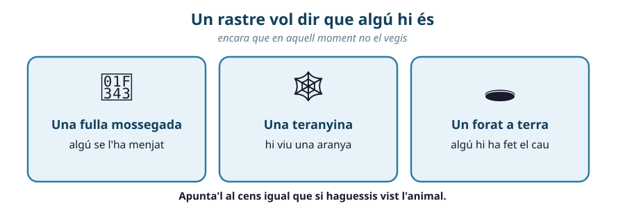
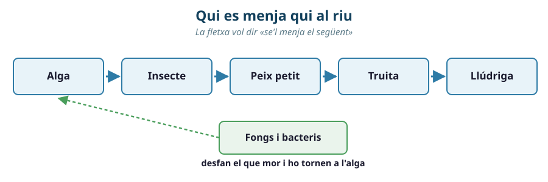
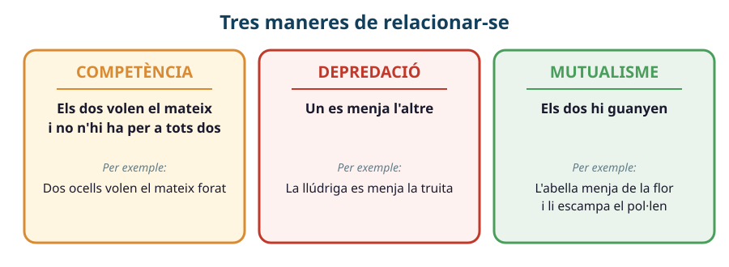
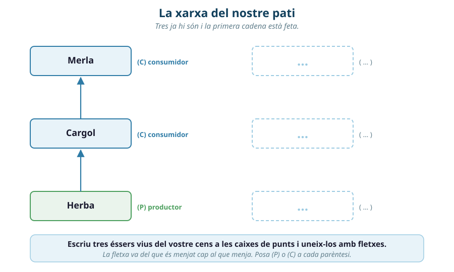

Comencem una unitat nova. Escriu i dibuixa el que penses ara. Això no es corregeix: ho tornaràs a mirar al final de la unitat per veure com ha canviat el teu pensament.
▸ Dibuixa qui es menja qui en un riu: posa-hi almenys quatre éssers vius i uneix-los amb fletxes.
▸ Si d'un ecosistema en desapareix un sol ésser viu, què els passa als altres?

Un cens és una llista del que hi ha en un lloc. Sortireu al pati i anotareu els éssers vius que hi trobeu. Si no en saps el nom, no passa res: posa-li una lletra (A, B, C…) i descriu-lo. També pots anotar rastres: una fulla mossegada, un forat, una teranyina. Un rastre vol dir que allà hi ha algú, encara que no el vegis.
💡 Les dues primeres files ja estan fetes, com a exemple. N'has d'afegir quatre més.
| Ésser viu o rastre | Zona | Què és | Què hi fa |
|---|---|---|---|
| herba | zona de les plantes | planta | és verda i creix a terra |
| fulla mossegada | zona de l'ombra | rastre | algú se l'ha menjat |
1. Encercla la resposta bona.
Les dues coses són possibles. Com ho podríem comprovar?

Cada fil va del que es menjat cap al que menja. Quan una espècie desapareix, deixa anar el seu fil. I llavors el que se la menjava es queda sense menjar… i també ha de deixar anar el seu. Un que cau en fa caure d'altres. I funciona també al revés: si desapareix el que es menjava algú, aquell algú es queda sense enemic i es multiplica.
2. Numera de l'1 al 5 l'ordre en què van anar caient, quan van desaparèixer les algues. Mira la figura de dalt.
3. Encercla la resposta bona a les dues frases.

Competència: dos éssers vius volen la mateixa cosa (menjar, aigua, un lloc) i no n'hi ha per a tots dos. Depredació: un es menja l'altre. Mutualisme: els dos hi guanyen — cadascun li dona a l'altre alguna cosa que necessita.
4. Uneix amb una ratlla cada relació amb la seva situació:
| Relació | Situació | |
|---|---|---|
| Competència | ——— | Una guineu caça un conill |
| Depredació | ——— | Dues plantes creixen juntes i es fan ombra |
| Mutualisme | ——— | L'abella menja de la flor i li escampa el pol·len |
5. Encercla la resposta bona.
Dins d'un ecosistema hi ha tres feines. El productor es fabrica el seu propi menjar amb la llum del sol (les plantes i les algues). El consumidor no se'l sap fabricar i se l'ha de menjar ja fet (els animals). El descomponedor desfà el que ha mort i el torna a terra, perquè les plantes el puguin fer servir un altre cop (els fongs i molts bacteris).
6. La planta fabrica el seu menjar amb la llum: és un .
El cargol es menja la planta: és un .
El fong desfà les fulles mortes: és un .
7. Encercla la resposta bona.

8. Afegeix-hi tres éssers vius del vostre cens, uneix-los amb fletxes i posa (P) o (C) a cada parèntesi.
💡 Dibuixa-hi a sobre, o copia el marc aquí sota si necessites més espai.
Ara ve la pregunta d'escriure. Ja saps com va: quatre passos, un a un. Els dos primers et diuen com començar; els dos últims els escrius tu sol.
9. Del vostre pati, traieu-ne un ésser viu. Què els passa als altres?
👀 OBSERVO
Quin ésser viu heu tret, i qui se'l menjava o de qui menjava ell. «Hem tret… i ell es menjava…»
❓ EM PREGUNTO
Qui es queda ara sense menjar? «Em pregunto què li passarà a…»
🔗 CONNECTO
Això s'assembla a alguna cosa que ja hem vist avui al riu.
💡 DEDUEIXO
Per tant, al nostre pati…
💡 El full de sortida d'avui es fa en un full a part, els últims minuts, sol i sense ajuda.